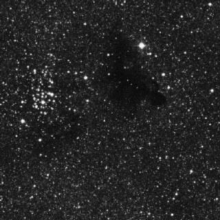

SJAA
Ephemeris
|
SJAA Ephemeris |
Seeing Stardust - A Deep Sky Project for the NoviceJane Houston |
The Milky Way looks like a river of tiny diamonds sprinkled with dark stardust this month. Follow this ribbony river from the northeast, near the "W" shaped constellation Cassiopeia across the sky to the constellation Sagittarius above the southern horizon. Notice how the Milky Way divides into two streams overhead. Between these two streams lies a dark band of starlight-obscuring dust. Also notice that the Milky Way stream thickens and brightens as it races southward toward the horizon near Sagittarius. This clumpy cloudy bulge is called the Sagittarius Star Cloud. In this direction lies the galactic center of the Milky Way.
July is the best time of the year to observe the Galactic Center. It's a brilliant area of the sky in more ways than one! Not only is it a great area to scan with binoculars and small telescopes, it is chock full of starry clusters and bright dusty glows interspersed with snakey black dust. There are some magnificent clusters and nebulous objects that you are already familiar with. We'll use them as guideposts. But this bright cloud also holds many surprises - one of which will thrill you and give you something to show the more experienced observer near you at your next star party!
We'll begin our journey with a visual scan of the Sagittarius Star Cloud and get familiar with the neighborhood. The constellation Sagittarius is prominent in the south/southwest this month. It is easier to locate the teapot asterism rather than try to see the whole constellation figure Sagittarius the Archer. It really does look like a teapot, and the Sagittarius Star Cloud really does look like the steam spewing forth from the kettle.
First, follow the larger fork of the Milky Way river east of the dust band where they split overhead. This dust features prominently in our observing target this month. The spout of the teapot is identified by the star Gamma Sagittarii. To the north and west of this bright star lies the richest star cloud in the sky containing millions of stars all clustered in this central bulge of our galaxy. Dr. E. E. Barnard, who made the first wide-angle photographs of our Milky Way at Lick Observatory atop Mount Hamilton in San Jose California in 1889, pondered the dark regions visible among the mass of stars. Barnard 86, an incredible dark nebula, is one of his discoveries. Earlier astronomers thought these dark regions were simply areas where there weren't any stars. Barnard thought the opposite - that these empty areas were actually concentrations of matter blocking our view. He was correct.
Millions of stars are clustered near the center of the Milky Way in the Sagittarius Star Cloud. Black snakey lines of dark clouds obscure some of the brilliant center of our galaxy. Right smack in the center of this brilliant starry backdrop lies a unique object. Dark nebula Barnard (shortened to B) 86, rimmed by the beautiful and symmetrical open cluster 9th magnitude NGC 6520. This little cluster of 25 stars range from magnitude 9 to 12, and form a perfect little circle with B-86 on its western side. "It appears as a distinct inky spot against the surrounding star-shimmer", wrote Robert Burnham, Jr. when describing this object in his Celestial Handbook.
These dark nebulae are visible in amateur telescopes. Using low power and a wide field even the smallest telescope will reveal dark nebulae. The best place to look for dark nebulae, sometimes referred to as coal sacks, is the Milky Way with its seemingly unending supply of background stars. The finest example of a dark nebula lies just 2.7 degrees North of our starry guidepost, Gamma Sagittarius! It's found at RA 18 02.7 Dec -27 50. The size of the dark nebula is 4.5' by 3', and the cluster measures 5' in diameter. Together they are about the size of many of the nearby Sagittarius Messier clusters. The nearest one for comparison is globular cluster M24 located nearby - 0.8 degrees (a little more than one index finger width) above Lambda Sagittarii, the top of the "Lid" of the teapot. M24 measures 11', comparing to B86 and it's companion open cluster which together measure 9.5'. Another way to easily find B86 is to hop down 5 degrees from M8, the Lagoon Nebula, the finest diffuse nebulae in the summer sky, and easy to see naked eye above Sagittarius. The nucleus of the Milky Way is only 4 degrees west of B86, making this patch of dark all the more remarkable. Dark nebulae do not jump out at you like other deep sky objects. It helps to be observing in a dark sky. It also helps if the nebulae have a distinctive shape. Luckily, B86 does have a distinctive shape. It's round, like a neat splotch of ink, which is why it is nicknamed Barnard's Ink Spot. It is shocking to see this small symmetrical batch of black surrounded by stars and starclouds in the Milky Way brightness.
To get your bearings and to learn a quick method of determining distances between stars or between stars and targeted objects, hold your fist at arms length and sight past it. Young viewers have smaller hands and shorter arms but their hands stay in proportion. A clenched fist measures about 10 degrees from thumb to pinkie. And an index finger held at arm's length will cover 1/2 degree and will cover the full moon. Know the field of view in your telescope's finder and you will have no trouble hopping up to this magnificent object from Gamma Sagittarii. It reminds some of a black widow spider with a dark inky body and a smaller shimmering head.
If you enjoy discovering B86, Barnard's Ink Spot, there are a dozen more to enjoy within the Sagittarius Star Cloud. Well known and easiest to see is B85, the dark regions in the Trifid nebula M20. Several dark nebula B88, 89 and 286 are the dark regions of the Lagoon Nebula, M8. And just 4.5 degrees south of cluster NGC 6520, (the dainty circle of stars on the edge of the Ink Spot nebula) is B76, known as the Parrots Head nebula. There are another dozen or so Barnard dark nebulae next door in Ophiuchus. Not all atlases show dark nebulae. Uranometria 2000.0 is a popular atlas which does show dark nebulae such as B86 (on page 339) and the Tirion Atlas shows it on chart 22.
Now, when you look at the dust lanes within spiral galaxies such as M31, the great Andromeda Galaxy, you'll be able to compare it to the great rift overhead in the summer Milky Way. Imagine how our "dust lane" might appear to an observer on a far off world. Dr. Barnard's beautiful little black Ink Spot, B-86 is a glimpse of real stardust. Dusty primordial matter - the stuff of future stars.
|  |
| Jane Houston; last updated: February 05, 2002 | Prev Next |